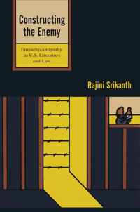

An argument, based in history, law, literature, and philosophy, for empathy as an integral part of decisions about who will be designated an enemy of the state
An argument, based in history, law, literature, and philosophy, for empathy as an integral part of decisions about who will be designated an enemy of the state


 An argument, based in history, law, literature, and philosophy, for empathy as an integral part of decisions about who will be designated an enemy of the state
An argument, based in history, law, literature, and philosophy, for empathy as an integral part of decisions about who will be designated an enemy of the state

|  |
Constructing the EnemyEmpathy/Antipathy in U.S. Literature and LawRajini Srikanthpaper EAN: 978-1-43990-324-7 (ISBN: 1-4399-0324-7) |
"Constructing the Enemy is a fascinating book—nuanced and engaging—that weaves together legal theory, the realities of legal practice, historical vignettes, and literary analysis. Srikanth artfully straddles disciplines and adds important new insights. Her refined, subtly developed topic is quite timely, and her ideas about empathy/antipathy are both challenging and accessible."
—Daniel Kanstroom, Boston College
In her engaging book, Constructing the Enemy, Rajini Srikanth probes the concept of empathy, attempting to understand its different types and how it is—or isn't—generated and maintained in specific circumstances.
Using literary texts to illuminate issues of power and discussions of law, Srikanth focuses on two case studies— the internment of Japanese citizens and Japanese Americans in World War II, after the bombing of Pearl Harbor, and the detainment of Muslim Americans and individuals from various nations in the U.S. prison at Guantanamo Bay.
Through primary documents and interviews that reveal why and how lawyers become involved in defending those who have been designated “enemies,” Srikanth explores the complex conditions under which engaged citizenship emerges. Constructing the Enemy probes the seductive promise of legal discourse and analyzes the emergence and manifestation of empathy in lawyers and other concerned citizens and the wider consequences of this empathy on the institutions that regulate our lives.
Excerpt available at www.temple.edu/tempress
"Srikanth dares to ask whether empathy could function as a national ethos. This is a startlingly different approach from the one we customarily see in commentary about the wars in Iraq and Afghanistan or about other conflicts in which the United States has involved itself. Her discussions of a wide range of issues are clearly structured, and her main argument is organized around the different kinds of empathy (strategic, compassionate, and ethical) that emerge in different contexts. Combining legal and literary texts, Srikanth not only distinguishes her treatment of empathy from that of other sources but also offers a fascinating cross-disciplinary contribution to the field of U.S. Cultural Studies. Srikanth’s exploration of the trope of empathy offers other pleasures, chief among which is her richly textured prose. But perhaps the most compelling feature of Constructing the Enemy is the author’s commitment to an ethical politics."
—Samir Dayal, Bentley University
"This engaging book argues that empathy can start individuals and nations on the road to justice.... This useful book demonstrates how the multidisciplinary approach championed in American studies can prepare citizens to move from displays of compassionate empathy to an ethical empathy of constructive engagement.... Highly recommended."
—Choice
"Constructing the Enemy presents a lucid argument against monolithic understandings of empathy.... Srikanth makes her case through a careful consideration of American literature and the legal work surrounding the histories of internment and detainment in the United States.... Constructing the Enemy represents a timely contribution to Asian American studies, human rights scholarship, and, in particular, critical legal studies."
—MELUS: Multi-Ethnic Literature of the U.S.
"Srikanth adopts the most biting critical project in 2012 in Constructing the Enemy to discuss cultural studies understandings of the legal and literary products arising from the conditions subsequent to 11 September 2001 in America.... [S]he creates a unified and continuously unfolding argument by centring her attention on empathy as a trope... [T]he critical argument here is both effective and in need of critical response and expansion, the book reads like an extremely effective seminar retracing empathy in American literary culture, which may very well inspire readers to pedagogical or curricular innovations."
—The Year's Work in English Studies
"Srikanth underscores, through a series of profoundly thoughtful chapters in Constructing the Enemy, that while US citizens like to think of themselves as pluralistic and welcoming, these attributes have been impaired by a sense that their vulnerability is radically unique."
—American Literature
Acknowledgements
Introduction: The Landscape of Empathy
1. Literary Imagination and American Empathy
2. Deserving Empathy? Renouncing American Citizenship
3. Hierarchies of Horror, Levels of Abuse: Empathy for the Internees
4. Guantánamo: Where Lawyers Connect with the “Worst of the Worst”
Conclusion: Prognosis: The Future of Empathy in the United States
Notes
References
Index
Rajini Srikanth is Professor of English at the University of Massachusetts, Boston. She is the author of The World Next Door: South Asian American Literature and the Idea of America and the coeditor (with Sunaina Maira) of Contours of the Heart: South Asians Map North America and (with Lavina Dhingra Shankar) of A Part Yet Apart: South Asians in Asian America.
Literature and Drama
Asian American Studies
Law and Criminology
© 2015 Temple University. All Rights Reserved. This page: http://www.temple.edu/tempress/titles/2118_reg.html.